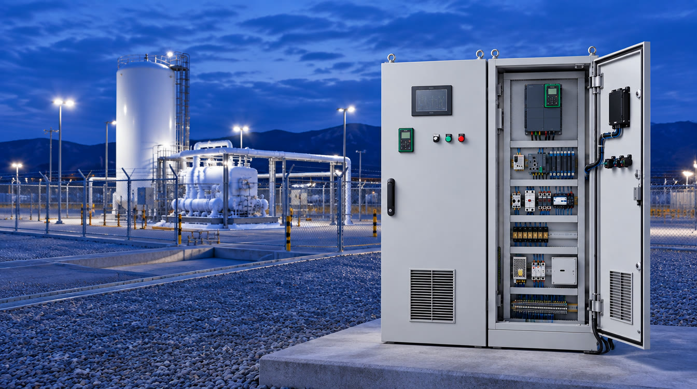

동인엔시스는 1991년부터 산업·선박 현장의 제어반을 설계하고 직접 제작해 왔습니다. 그 경험 위에서, 이제 설비를 제어하는 제어반이 설비의 데이터를 수집하고 연결하는 지능형 제어반을 만듭니다.
동인엔시스를 찾아주셔서 감사합니다.
동인엔시스는 1991년 산업용 제어기기 공급으로 시작해, 선박·에너지·플랜트 현장의 제어시스템을 설계하고 직접 제작하는 회사로 성장해 왔습니다. 750건이 넘는 프로젝트를 수행하며 한 가지를 분명히 확인했습니다. 대부분의 설비는 이미 PLC와 인버터로 제어되고 있지만, 그 안에서 만들어지는 데이터는 제어반 밖으로 나오지 못하고 있다는 사실입니다.
AI와 스마트팩토리가 제 역할을 하려면 현장 설비의 데이터가 먼저 필요합니다. 동인엔시스의 지능형 제어반은 설비를 제어하는 바로 그 자리에서 데이터를 수집하고, 표준화된 형태로 클라우드나 고객사 서버까지 연결합니다. 제조기업에는 설비를 데이터로 관리하는 첫걸음을, IT기업에는 믿을 수 있는 현장 데이터를 제공하겠습니다.
35년간 현장에서 쌓아 온 제어 기술 위에,
데이터와 지능을 더해 가겠습니다.
동인기전 설립. Siemens · Fuji Electric · ABB · Danfoss 등 글로벌 전력·제어 브랜드 공급
산업용·해상용 전기제어시스템 사업 개시. 설계·제작·소프트웨어·시운전 일괄 수행
친환경기술연구소 설립. 해양수산부 국가과제, 액화수소충전소 제어시스템 수행
제어반 기반 산업설비 데이터 인프라. 현장 설비 데이터를 클라우드·고객사 시스템·AI와 연결
데이터 인프라는 소프트웨어만으로 완성되지 않습니다. 현장 설비를 직접 제어해 본 경험이 출발점입니다.
제어반 설계부터 제작·배선·PLC 프로그램·공장검사·현장 시운전까지 자체 수행합니다.
안전 기준이 높은 수소·선박·플랜트 현장에서 제어시스템을 구축하고 검증해 왔습니다.
친환경기술연구소를 중심으로 국가·지역 R&D와 산학협력을 수행하고 있습니다.
현장 설비 데이터로
제조·해양 산업의 DX·AX를 앞당깁니다.
설비를 제어하는 제어반에서
신뢰할 수 있는 데이터를 만들어 연결합니다.


ISO 인증서, 기업 인증·확인서, 회사소개서를 한곳에서 확인하고 내려받을 수 있습니다.
TEL 051-862-3668 · FAX 051-862-3325 · E-mail dongin@donginmne.com